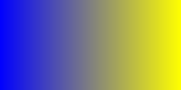

The First Shader
Remember the calculate_pixel_color() function from
the previous article?
Let's modify it so that it produces a blue-to-yellow gradient from left to
right. Can you figure out how we can do this while only knowing the X and Y
coordinates (and the width and height of the image)? Try to think about it for
a bit, and come back when you're ready.
Linear Interpolation
Ok, here's the spoiler. What we want is for the left-most pixels to have RGB
values of (0, 0, 1) representing blue, and for the pixels at the
right side to have (1, 1, 0), representing yellow. For anything
in between, we want to linearly interpolate between blue and yellow,
so let's start from there and make a linear interpolation function, often
called mix() or lerp() in graphics programming.
def mix(start, end, how_much):
return start + how_much * (end - start)
Try to fully understand how this works. If how_much is 0, the
result will be start + 0 * (end - start), which is just
start. If it's 1, we'll get
start + 1 * (end - start), which is
start + end - start, which simplifies to end. If
how_much is 0.5, we get start + 0.5 * (end - start),
which is start + (0.5 * end) - (0.5 * start), where
start and -(0.5 * start) sum up to
0.5 * start so we get (0.5 * start) + (0.5 * end),
which is (start + end) / 2. You might remember this as a method
to take the middle point between two numbers. See how intuitive linear
interpolation is?
As a side note, people don't always use the same parameter names as we did,
being start, end, and how_much. One
might use a, b, and t for example.
The third parameter is sometimes called the mix factor, or the blending
factor.
This is all well and good, but how do we turn our X and Y coordinates into a single mix factor from 0 to 1?
Range Mapping
You might realize that we don't really need the Y coordinate, as we want a
purely horizontal gradient where changing the Y coordinate has no effect on
the values. What we want is to map our X coordinate from the (0, width) range
to the (0, 1) range. An easy way to achieve this is to just divide X by the
width of our image, which is 200 in our case. This gives us a value from 0 to
1 that we can use as the mix factor. In the general case, we might need more
arithmetic operations for range mapping. Imagine, for example, that we want to
map a number, v, from the [4, 10] range to the [500, 700] range.
For this, we need to calculate how much v has moved from 4 to 10.
This is the exact opposite of linear interpolation. Instead of finding the
interpolated value v given start, end,
and how_much, we want to find how_much given
v, start, and end. This might sound
complicated at first, but as we saw before, if start is 0
(as it was in the (0, width) range), it becomes trivial to find
how_much, as we just need to divide v by the size of
our range. We could simply subtract start from both ends and
transform our input range of [4, 10] to [0, 6] while it still has the same
size of 6 units.
We're almost done, we just need to subtract the same amount from
v so that it stays just as far from start and
end as it was before. We can now simply divide v
by 6 (the size of our range) to find how_much.
# returns t (the mix factor)
def unmix(v, start, end):
return (v - start) / (end - start)After this unmixing, we can now remix in the output range, [500, 700].
def remap(
v,
input_start,
input_end,
output_start,
output_end
):
how_much = unmix(v, input_start, input_end)
return mix(output_start, output_end, how_much)
If we use the actual math operations instead of calling unmix()
and mix(), we get the following.
def remap(
v,
input_start,
input_end,
output_start,
output_end
):
t = (v - input_start) / (input_end - input_start)
return output_start + t * (output_end - output_start)
This function basically figures out how much v has moved relative
to the input range, and moves it by the same amount in the output range.
mix() for RGB?
So far, we know how to mix between single numbers, but our original goal was to mix between two RGB triplets, namely, blue and yellow. Conveniently for us, we can just do the same mix operation for all three color channels (RGB) individually and effectively lerp between the two colors.
def mix_colors(
a: Color,
b: Color,
t: float
) -> Color:
result = new Color(
red=mix(a.red, b.red, t),
green=mix(a.green, b.green, t),
blue=mix(a.blue, b.blue, t)
)
We're finally ready to update our calculate_pixel_color()
function to give us a blue-to-yellow gradient from left to right.
def calculate_pixel_color(x: int, y: int) -> Color:
blue = new Color(0, 0, 1)
yellow = new Color(1, 1, 0)
t = x / width
return mix_colors(blue, yellow, t)
Keep in mind that, unlike x and y which vary for
every pixel, width and height are global constants
and have the same value for all pixels. We call these uniform values, or just
uniforms, as they don't change throughout the shading process.
I've gone ahead and implemented this shader in GLSL, the OpenGL Shading Language. Here's what it looks like.
The Center of a Pixel
Some Topic
This topic is really cool I want to talk about it all the time.